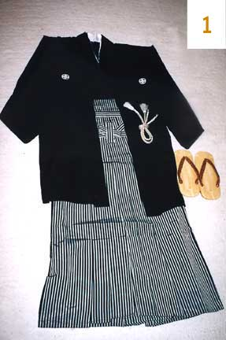

About
Established in 1979, Kabuki Beauty Salon has been serving women of all ages throughout the Bay Area. The owner,
award
winning esthetician, Keiko Kikuta has many years of experience in make-up and hair styling. She has worked for
various
magazines, TV shows and theaters. Kabuki Beauty Salon offers many services including luxury facials with exclu-
sive
Wamiles Skin Care products, hair style and make-up that you desire, kimono rentals and also bridal services.

Owner / Stylist
Keiko Kikuta
Phone #: 415-722-7431
Email: keikokabuki@gmail.com
Stylist
Mei Ino Mak
Phone #: 415-710-9703
Email: meiino123@gmail.com